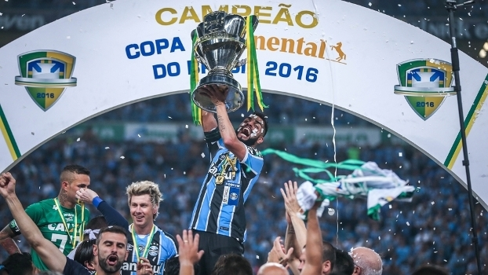
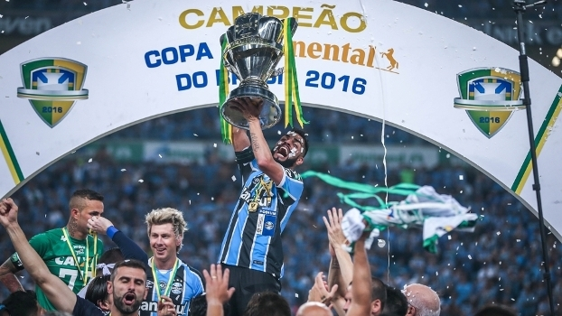

O Grêmio Foot-Ball Porto Alegrense é um clube de futebol brasileiro da cidade de Porto Alegre, no Rio Grande do Sul, fundado em 15 de setembro de 1903 por Candido Dias da Silva. É considerado um dos maiores clubes do Brasil e da América do Sul. Suas cores são azul, preto e branco
História
Foi por meio do paulista Cândido Dias da Silva, que trabalhava em Porto Alegre, que o Grêmio surgiu. A história é curiosa: houve uma partida de futebol para exibição do esporte, na capital gaúcha, com jogadores convidados ingleses e alemães. Durante a partida, a bola estourou e Cândido, que tinha uma bola em mãos, mas não sabia jogar, emprestou a sua para viabilizar o término da partida. Ao final do jogo, os jogadores ensinaram a Cândido as regras do esporte, e também a como montar um clube. Assim, com trinta e dois participantes presentes, em 15 de setembro de 1903, fundou-se o Grêmio Foot-Ball Porto Alegrense.
Nas duas primeiras décadas de existência, o Grêmio era um time amador,
ainda que disputasse alguns jogos com outros times da cidade. Após esse período, iniciou-se uma fase de profissionalização do futebol, e o Grêmio consagrou-se como um dos grandes times brasileiros,"
Em 19 de setembro de 1954, o Grêmio inaugurou o seu maior projeto desde a sua fundação: o Estádio Olímpico. Com capacidade para 38 mil pessoas, ele tinha um só anel. No jogo de inauguração, o Grêmio venceu o Nacional, de Montevidéu por 2 a 0. O presidente, na época era Saturnino Vanzelotti.
Nos anos seguintes, o Grêmio disputou treze campeonatos e venceu doze. Conquistou o pentacampeonato Gaúcho e Metropolitano (1956-1960) e o heptacampeonato Gaúcho (1962-1968),
sendo esta a maior sequência de títulos do Gauchão do clube.
No ano de 1982, foi vice-campeão brasileiro, perdendo para o Flamengo na final, que só foi decidida em um jogo-desempate. Na sua primeira participação na Copa Libertadores da América, o time acabou sendo eliminado na primeira fase, mas ganhou experiência para a próxima Libertadores, a ser disputada no ano seguinte.
Pode-se afirmar que, em termos de títulos, 1983 foi o melhor ano da história do clube. Neste espaço de tempo, venceu a Taça Libertadores e a Copa Intercontinental (Mundial de Clubes), títulos inéditos para o Rio Grande do Sul.
Em 1991, o Grêmio chegou pela segunda vez à final da Copa do Brasil, tendo sido derrotado pelo Criciúma, equipe treinada por Luiz Felipe Scolari, que ainda nesta década se consagraria como um dos maiores técnicos da história do Tricolor Gaúcho. Porém, neste mesmo ano, o Tricolor foi rebaixado pela 1ª vez à segunda divisão do Campeonato Brasileiro.
Jardel e Paulo Nunes foram os principais destaques da década de 1990. Ambos conquistaram dois Campeonatos Gaúchos (1995 e 1996), uma Copa Libertadores da América e uma Recopa Sul-Americana. Paulo Nunes também conquistou o Campeonato Brasileiro de Futebol de 1996 e a Copa do Brasil de 1997.
Em 1993, o Tricolor voltou a vencer o Campeonato Gaúcho, que não conquistava desde 1990. Nesse mesmo ano, Luiz Felipe Scolari, que já tivera uma passagem pelo clube, em 1987, foi contratado como treinador. Também em 1993, o time voltou à final de um campeonato nacional e foi vice-campeão da Copa do Brasil. No ano seguinte, o time de Felipão não deixou o título escapar, ao vencer o Ceará na final. O título deu direito ao clube de disputar a Copa Libertadores de 1995.
O time não disputava tal competição desde 1990, mas, mesmo algum tempo depois de disputá-la pela última vez, foi muito bem.
Seria em 2016 que o Grêmio retomaria o caminho das grandes conquistas.
Apesar de não começar o ano bem, depois de ser eliminado na semifinal do Campeonato Gaúcho de 2016 pelo Juventude, dentro da Arena do Grêmio e posteriormente, mesmo após campanha razoável na fase de grupos da Copa Libertadores, ser eliminado pelos argentinos do Rosário Central, nas oitavas de final.
Com campanha mediana no Campeonato Brasileiro, o clube liberou o técnico Roger Machado, que foi substituído pelo ídolo Renato Gaúcho. Renato comandou o time do Grêmio desde a segunda partida das oitavas de final da Copa do Brasil, quando eliminou o Athletico-PR nos pênaltis depois de perder por 1 a 0 dentro de casa.
No jogo de ida, ainda comandado por Roger Machado, o Tricolor havia vencido por 1 a 0 em Curitiba. Depois disso, na caminhada pelo título, o Grêmio eliminou Palmeiras e Cruzeiro até chegar na final contra o Atlético-MG.
A primeira partida da final foi realizada em 23 de novembro de 2016, no Mineirão, onde um público de quase 48 mil pessoas viu o Grêmio vencer por 3 a 1,
fora de casa, com dois gols de Pedro Rocha e um de Everton. O gol dos mandantes foi marcado por Gabriel. No jogo de volta, podendo perder até mesmo por um a zero,
o Grêmio sagrou-se pentacampeão da Copa do Brasil de Futebol de 2016 após empate em 1 a 1 na Arena do Grêmio, encerrando um jejum de 15 anos sem títulos de expressão a nível nacional.
Paralelamente, terminou o Campeonato Brasileiro na 9ª posição.
Pedro Geromel, capitão que levantou a taça da Copa Libertadores de 2017, foi eleito pelo El País (Uruguai)
como melhor zagueiro da competição. Também foi um dos 23 convocados de Tite para a disputa da Copa do Mundo FIFA de 2018.
No ano de 2017, em sua décima sétima participação em Copa Libertadores,
o Grêmio alcançou o o terceiro título, com destaque para a defesa de Marcelo Grohe no jogo contra o Barcelona de Guayaquil pelas semifinais, que virou sensação na mídia mundial e comparada a defesa de Gordon Banks. Enfrentou o Lanús nos dois últimos jogos, clube do bairro de Buenos Aires e estreante em finais de Libertadores.
Na primeira partida, Cícero marcou o gol que colocou o Grêmio em vantagem para a última partida em Buenos Aires. Na Argentina, sem temer a pressão dos mandantes chegou a abrir 2 a 0 no primeiro tempo com gols de Luan e Fernandinho.
José Sand descontou de pênalti para os locais. Pedro Geromel historicamente se juntou a Hugo de León e Adílson Batista como capitães tricolores que levantaram a taça mais prestigiada da América.
Com a conquista da Copa Libertadores da América de 2017, Grêmio garantiu vaga na Copa do Mundo de Clubes da FIFA de 2017. O primeiro jogo, a semifinal contra o Pachuca do México terminou em 1 a 0 para o tricolor,
com gol marcado aos acréscimos por Everton. O adversário da final foi o clube espanhol Real Madrid, 11 vezes campeão da Liga dos Campeões da UEFA e havia se classificado após vencer la champions por 4 a 1 a equipe da Juventus e depois de eliminar o Al-Jazira nas semifinais por 2 a 1.
O time madrileño foi a campo com a sua força máxima, jogadores que são atuais titulares em suas respectivas seleções nacionais e dono da FIFA Ballon d'Or de 2017, Cristiano Ronaldo. A equipe do Grêmio não pode contar com o destaque da Libertadores o jovem Arthur (por conta de lesão), Cícero (autor do gol da final na primeira partida) e Cristian por conta do regulamento da FIFA sobre transferências no Mundial.
Após resistir grande parte da primeira etapa com atuações sólidas dos defensores, em destaque para o capitão Pedro Geromel, Cristiano Ronaldo abriu o marcador aos 53 minutos em uma cobrança de falta. O jogo terminou 1 a 0 para a equipe de Madrid. Encerrou a competição como segundo melhor clube do mundo em 2017 e sendo a única equipe gaúcha a participar de todos os campeonatos oficiais da FIFA como finalista.
 
